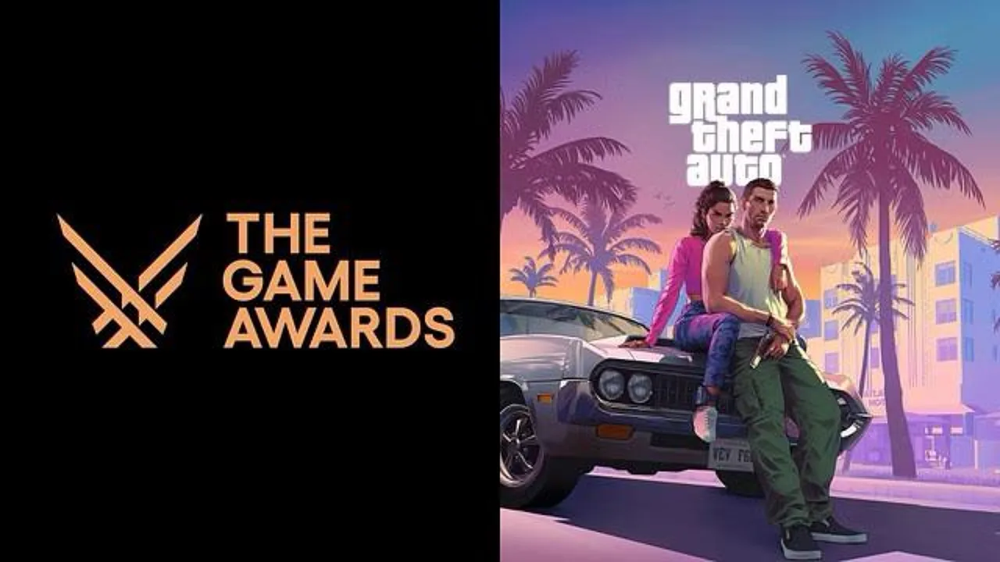

← Volver a Noticias

El remake de Ocarina of Time ya es el juego físico más vendido de Estados Unidos en 2026
Luiso · 17 de noviembre de 2026 · 3 min de lectura
Luiso · 17 de noviembre de 2026 · 3 min de lectura
El regreso de uno de los títulos más importantes de la historia de los videojuegos está teniendo un comienzo extraordinario. El remake de The Legend of Zelda: Ocarina of Time se convirtió en el juego físico más vendido de Estados Unidos durante 2026, después de superar el millón de unidades comercializadas en apenas su primera semana.
La información fue compartida por Mat Piscatella, director sénior de Circana, compañía especializada en el seguimiento del mercado de videojuegos estadounidense. Según los datos publicados por el analista, ningún otro lanzamiento físico de este año había conseguido igualar, en ventas acumuladas, la cifra que alcanzó la nueva versión de la aventura de Link durante sus primeros días en las tiendas.
El resultado también tiene un valor particular dentro de la franquicia: es el primer videojuego en superar el millón de copias físicas vendidas durante su semana de lanzamiento en Estados Unidos desde The Legend of Zelda: Tears of the Kingdom, en 2023.
El éxito en Estados Unidos se suma a las cifras internacionales que había comunicado previamente Nintendo. La compañía informó que el remake alcanzó 5,2 millones de unidades vendidas en todo el mundo durante sus primeros cuatro días, sumando las copias físicas y digitales.
Es importante distinguir ambos registros: el dato de Circana se refiere específicamente a las ventas físicas en Estados Unidos durante la primera semana, mientras que la cifra comunicada por Nintendo contempla el mercado mundial y combina ambos formatos. En cualquier caso, los números muestran un debut especialmente fuerte para una nueva versión de un juego que ya tiene décadas de historia.
La recepción comercial también llega acompañada de buenas valoraciones por parte de la crítica. En su análisis, Video Games Chronicle destacó que Nintendo optó por modernizar distintos aspectos de la experiencia sin modificar por completo la estructura del original, una decisión que permite conservar buena parte de su identidad.
Aunque Ocarina of Time ocupa actualmente el primer lugar entre los juegos físicos más vendidos del año en Estados Unidos, su posición podría cambiar muy pronto. El lanzamiento de Grand Theft Auto VI está previsto para esta semana y se espera que tenga un rendimiento comercial considerablemente alto.
Hay un detalle interesante en este caso: las ediciones físicas de GTA VI llegarán en formato de caja con un código de descarga, en lugar de incluir un disco. Sin embargo, Mat Piscatella confirmó que Circana contabilizará esas unidades como ventas físicas, por lo que también podrán competir dentro de esa clasificación.
La diferencia entre ambos formatos no impedirá que GTA VI tenga posibilidades de superar el registro de Zelda. La incógnita estará en cuántos jugadores elegirán comprar la edición física con código en caja durante su primera semana, en lugar de adquirir el juego directamente en formato digital.
El rendimiento de Ocarina of Time demuestra que el interés por los grandes clásicos de Nintendo sigue siendo enorme cuando reciben una reconstrucción capaz de acercarlos a nuevas generaciones. La aventura original, publicada para Nintendo 64, es considerada uno de los juegos más influyentes de la historia, y su regreso consiguió atraer tanto a quienes ya la conocían como a nuevos jugadores.
Por ahora, el remake lidera las ventas físicas estadounidenses de 2026, aunque el inminente estreno de Grand Theft Auto VI podría modificar rápidamente el ranking. Lo que ya consiguió, de todos modos, es un debut de más de un millón de copias físicas en una semana, una marca que ningún otro lanzamiento había alcanzado desde Tears of the Kingdom.
 17 de noviembre de 2026
17 de noviembre de 2026
La Academy of Interactive Arts & Sciences anunció que el histórico creativo de Nintendo será el primer destinatario de un nuevo reconocimiento que distinguirá a figuras cuya influencia haya marcado a varias generaciones de la industria. El premio se entregará durante la 30.ª edición de los D.I.C.E. Awards, en febrero de 2027.

18 de noviembre de 2026El nuevo juego de Rockstar Games consiguió ocho nominaciones en la edición 2026 de The Game Awards, incluida la categoría Juego del Año. La lista también reconoce a producciones como Control Resonant, Resident Evil Requiem y Phantom Blade Zero. La ceremonia se realizará el 10 de diciembre en Los Ángeles.
 30 de septiembre de 2026
30 de septiembre de 2026
El exdirectivo de PlayStation, Shuhei Yoshida, habló sobre el futuro del hardware y consideró que Sony y Nintendo podrían prolongar la vida de PS5 y Switch 2. Su argumento está relacionado con el aumento del precio de los componentes y con la percepción de que muchos jugadores todavía están satisfechos con el hardware actual.
Cargando comentarios…